Personal project · 2026
My portfolio
A personal space to showcase my work, document my progress and explore the relationship between design and code. Built from the ground up with HTML, CSS and JavaScript, with a responsive experience across screens.
- Type
- Personal project
- Stack
- HTML, CSS, JavaScript — no framework
- Pages
- Home, contact, project pages
- Hosting
- GitHub Pages
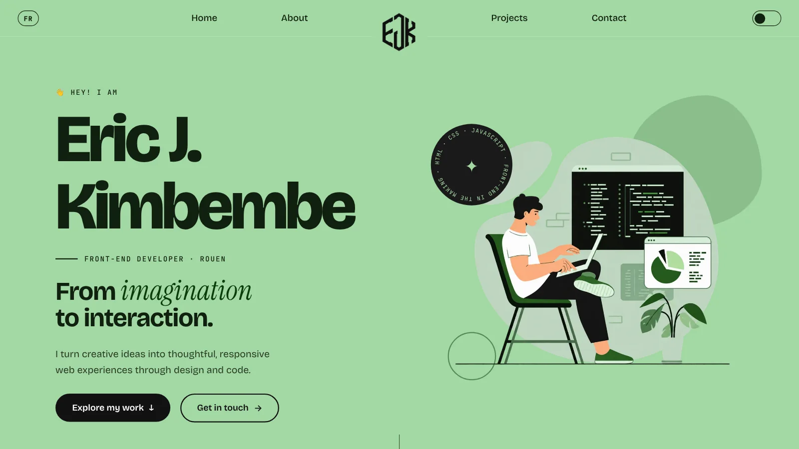

The goal
A space that feels like my own
I wanted to create a portfolio that felt like my own, not just a template filled with projects. A space where I could bring together my work, experiment with design and put my front-end skills into practice. From the layout and visual identity to the smaller interactions, every part of the site was an opportunity to learn, experiment and build something from scratch.
What I built
Small details, done with care
- 01Light & darkA theme toggle with a moon drawn in CSS, remembered on every page
- 02ResponsiveGrid and Flexbox layouts from small phones to wide screens, with a full-screen menu on phones
- 03MotionTitles that slide in, sections that appear as you scroll, and cards that tilt towards the mouse
- 04Contact formEvery field is checked in JavaScript, with a clear message about what to fix
- 05BilingualEnglish and French on every page, following the browser's language or your choice
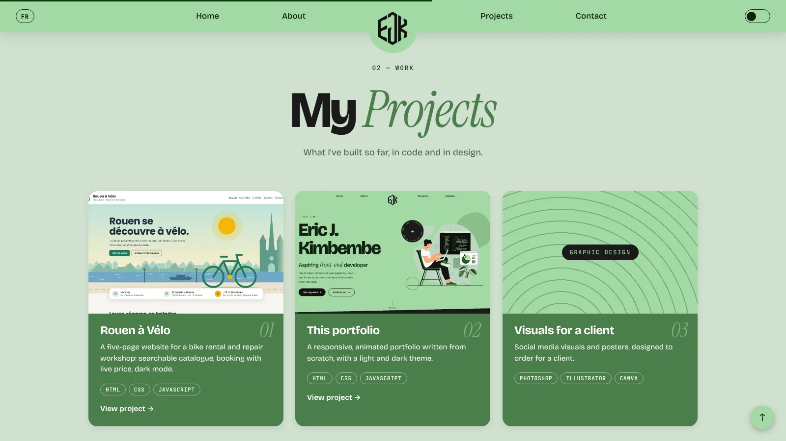
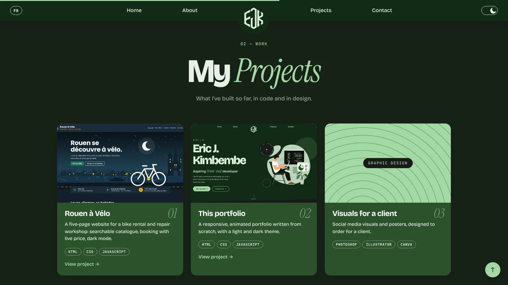
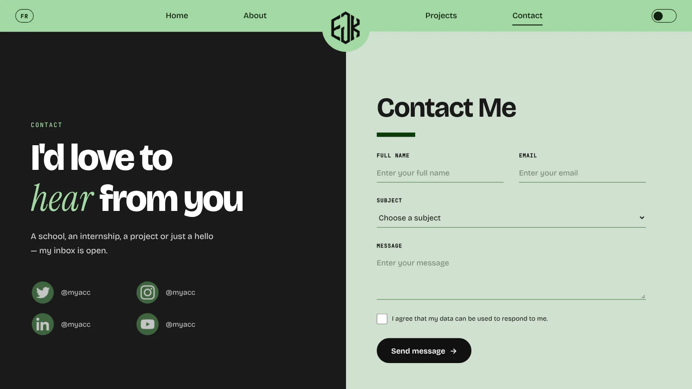
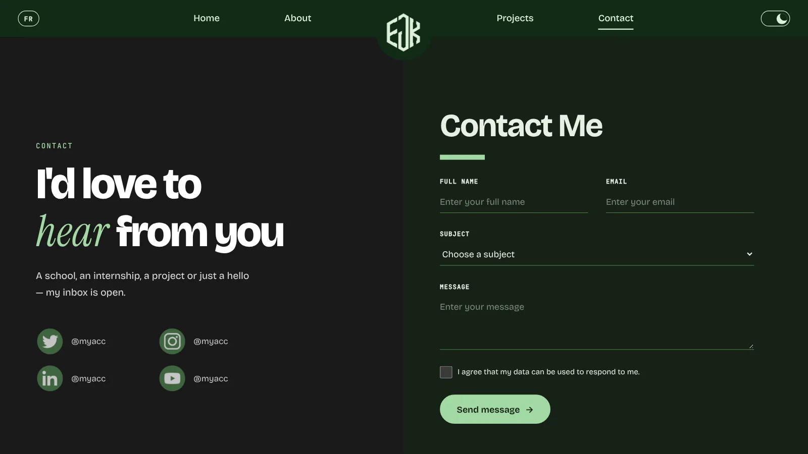
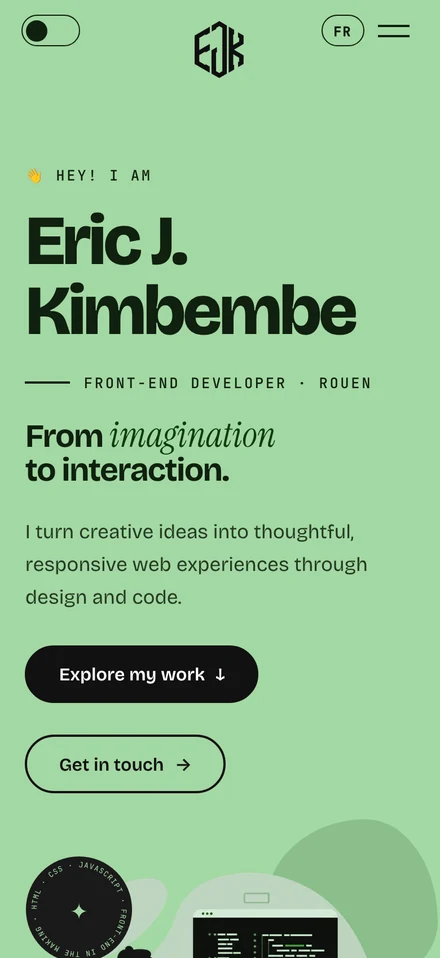
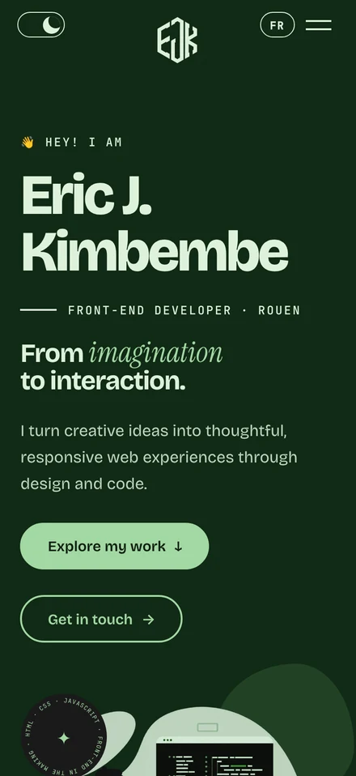
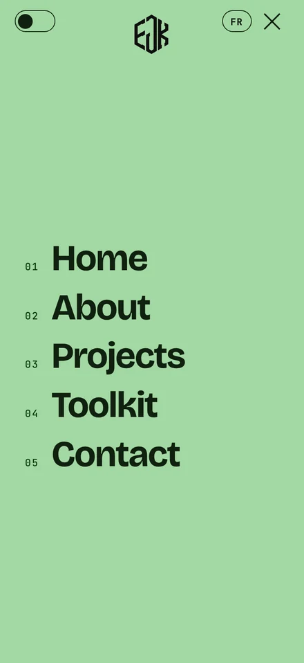
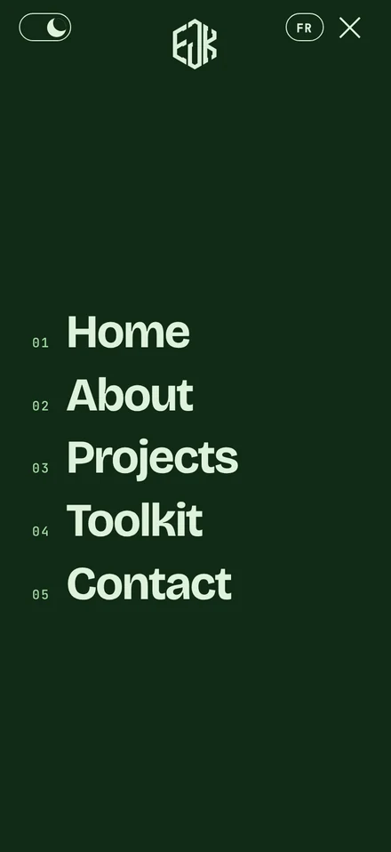
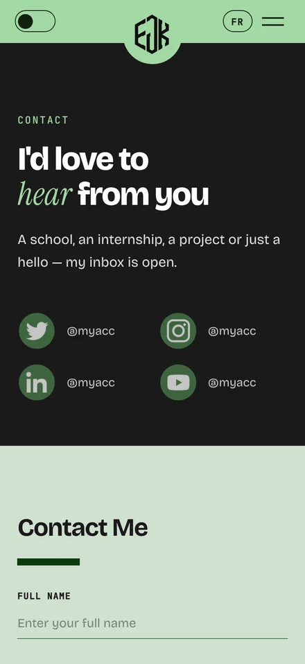
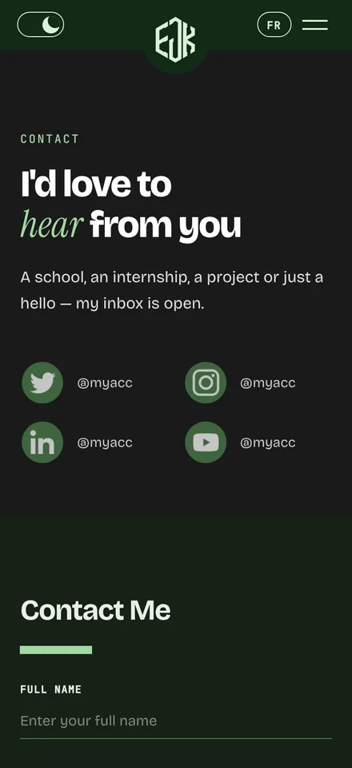